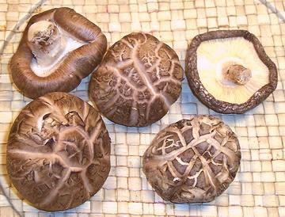

Shiitake Mushrooms

[Chinese, Black or Forest Mushroom, Oak Mushroom, Lentinus edodes]
Varying from tan to dark brown, Shiitakes, both fresh and dried are
almost always used cooked. They are much tougher than Criminis and have a
more intense mushroom flavor. Dried they run from 1-1/2 to 2 inches in
diameter and weigh 7 to 10 to the ounce. Fresh they run from 1-1/2 to
2-1/2 inches in diameter and weigh 3 to 5 to the ounce. Of the photo
specimens the three on the left are fresh and the two on the right are
dried.
Dried Shiitakes are generally sold as "dried black mushroom" or
"dried forest mushroom". In any case they are easily identifiable due to
the texture of the top of the cap. Fresh shiitakes are now produced in
large quantity in several areas of the U.S. and are ever easier to find.
In many East Asian markets a special grade of dried shiitakes that is
very light in color with deep crackling on the top surface is sold at
very high prices, often in windowed gift boxes.
More on Mushrooms.
Buying:
Dried Shiitakes are now available in just about
all Asian and Southeast Asian markets and in most Supermarkets throughout
the US. Fresh are available in most markets which carry Asian fresh
produce, at least here on the West Coast. Both are best bought from an
ethnic Chinese, Korean or Southeast Asian grocery where they will be
fresher and much cheaper than from the supers or health food outlets.
Purchased fresh they should be firm and a bit dryish. They are
sometimes sold rather damp and soft, but that way they will start to mold
in a much shorter time.
Storing:
Dried they can be kept for at least a years in
a dry, tightly sealed container kept away from sunlight. Fresh they can
be kept up to 14 days loosely wrapped and refrigerated. They are much
more tolerant of plastic wrapping than white mushrooms are.
Cooking:
Chinese recipes almost always call for dried
shiitakes and fresh are rarely used. Japanese and Korean recipes very
often call for fresh. The stems aren't used either fresh or dry.
They're tough and cooking doesn't soften them much.
Soaking Dry:
Dry shiitakes should be re-hydrated before
using. Better flavor results from soaking in cool water for 1 hour or
more, but if you are in a hurry, you can soak in very warm water for
about 30 minutes. Then remove the stems and cut or not following the
recipe. The soaking liquid can be used in some recipes but will make
the mushroom flavor too strong in others. Most recipes presume you
will discard it, but some call for it. Use your own best judgement.
Yield:
One ounce of dry mushrooms will weigh about 4
ounces soaked and wrung out.
Soaking Fresh:
Fresh Shiitakes are generally dryish so
stem them, cut or not following the recipe. Soak them in warm water for
20 minutes or so and then wring them out well. Soaking transforms the
texture from tough to silky, and they will cook much better. Soaking
is especially important when using them to substitute for crimini or
white mushrooms where tender texture and a lot of moisture is expected.
Subst:
Fresh shiitakes generally cannot substitute for
other mushrooms because or their distinctive flavor, but sometimes it
can work (see about soaking above). Dry ones would very rarely work.
Dried and fresh can be substituted for each other with appropriate
adjustment for both weight and flavor. It will change the flavor of the
recipe some. Other mushrooms generally cannot be substituted for
shiitakes - they are too moist, tender and weak in flavor.
fu_shiitz 081123 - www.clovegarden.com
©Andrew Grygus - agryg@clovegarden.com - Photos
on this page not otherwise credited © cg1
- Linking to and non-commercial use of this page permitted